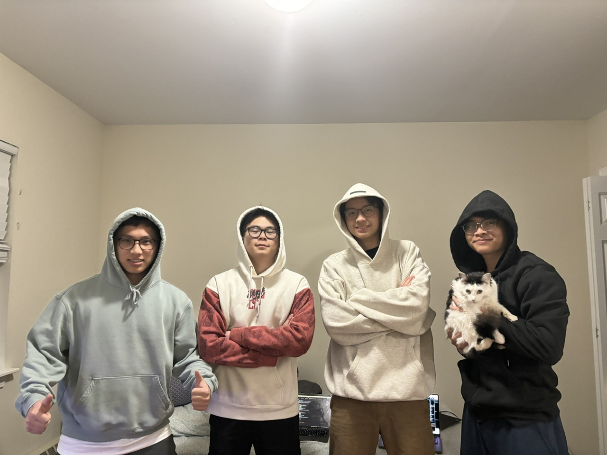

Vision |
Team |
Overview |
Application Parts |
Data Requirements |
Wire Frames |
Real-World Connection |
Integrative Experience |
PurrPals: A website to find friends for cats and kittens.
Team

Overview
The web application "PurrPals" aims to revolutionize the way cats socialize and find companionship in the digital age. Our project addresses the real-world need for feline companionship, particularly for cats living in urban environments where outdoor exploration may be limited.Application Parts
Data Requirements
Wire Frames
These wireframes are meticulously crafted to ensure a user-friendly experience and guide users through the core functionalities of the PurrPals application. From the Homepage to the Profile Page, Matchmaking Page, and Messaging Page, each wireframe is tailored to meet the needs of cat owners and enhance their interactions within the platform.
Real-World Connection
As the human-animal bond continues to deepen, pet ownership has become an integral part of many people's lives, offering companionship, emotional support, and a sense of belonging. However, for cat owners, finding suitable companionship for their beloved felines can often be a challenging and isolating experience. This is where PurrPals steps in to address a tangible real-world issue – the need for cats to find friends and socialize in a safe and engaging environment.
Much like humans, cats thrive on social interactions and playmates, yet many owners struggle to facilitate these connections due to limited opportunities or resources. PurrPals bridges this gap by providing a dedicated platform where cat owners can connect with like-minded individuals, arrange playdates for their pets, and foster meaningful relationships within the feline community. By leveraging technology to promote socialization among cats, PurrPals aims to enhance the well-being and happiness of our furry friends while alleviating the isolation and loneliness experienced by many owners.
In today's fast-paced world, where urbanization and digitalization have led to increased social fragmentation, initiatives that promote connection and community-building are more important than ever. PurrPals not only addresses the practical challenge of finding companionship for cats but also serves a deeper purpose by fostering a sense of belonging and camaraderie among pet owners. By creating a supportive online environment where cats can thrive socially, PurrPals contributes to the overall well-being of both pets and their human companions, exemplifying how technology can be harnessed to address real-world issues and enrich lives in meaningful ways.
In conclusion, PurrPals embodies the intersection of technology and compassion, offering a solution to a tangible real-world issue by promoting socialization and companionship among cats. Through its innovative approach to connecting pet owners and fostering community, PurrPals strives to make a positive impact on the lives of cats and their owners, demonstrating the transformative potential of digital platforms in addressing the diverse needs of our society.
Integrative Experience
PurrPals represents the culmination of my university education and personal growth journey, integrating various aspects of my coursework and life experiences into a cohesive project. Throughout my academic journey, I have delved into courses such as web development, database management, and user experience design, laying the foundation for building a comprehensive web application like PurrPals. These courses equipped me with the technical skills and knowledge necessary to conceptualize, design, and implement a platform that addresses real-world challenges.
Additionally, my personal experiences as a cat owner and enthusiast have played a significant role in shaping the vision and mission of PurrPals. Through interactions with fellow pet owners and observations of my own cat's behavior, I recognized the need for a dedicated platform that facilitates socialization and companionship among cats. This realization sparked the idea for PurrPals and fueled my passion for creating a community-driven solution to a tangible real-world issue.
As I embark on the journey of developing PurrPals, I draw upon the lessons learned from both my academic coursework and personal experiences, weaving together technical expertise, creative innovation, and empathy for animals and their owners. PurrPals serves as an integrative experience that not only showcases my academic achievements but also reflects my personal growth, values, and aspirations. Through this project, I aim to make a meaningful impact on the lives of cats and their owners while demonstrating the transformative power of technology in fostering connection, community, and compassion.